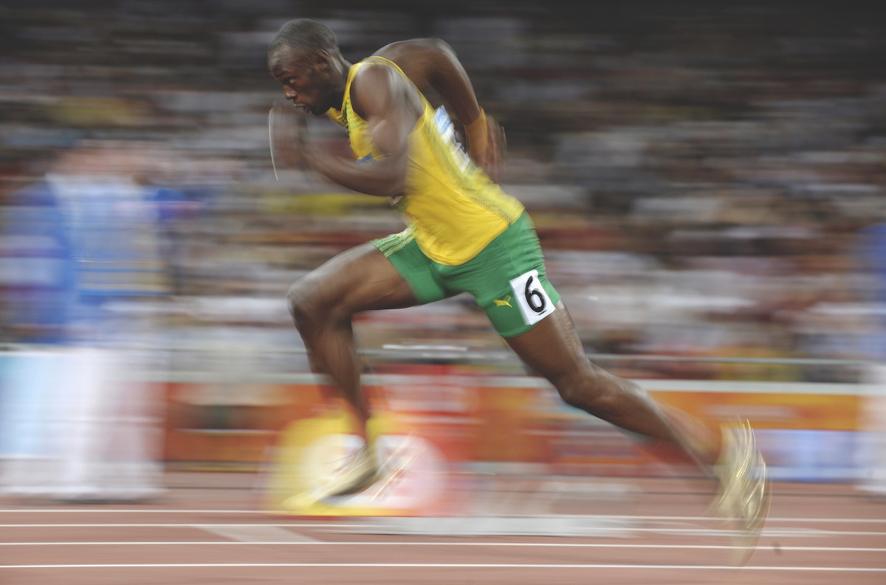

Many people do not understand the importance of physical fitness and maintaining good health, therefore they ignore physical fitness and activities which then could lead to life threatening conditions such as heart disease, obesity, high blood pressure, and many more. By enduring daily physical activities, you are not only improving the state and condition of your body, but your state of mind as well. This can benefit your mental state of mind by improving your confidence, and make you feel overall better about yourself and your looks.To put it simply, physical activity and exercise is important for everyone. Children, adolescents, and adults of all ages need regular physical activity. Physical activity promotes good health, and you should stay active throughout all stages of your life regardless of your body type or BMI.Understanding the benefits of physical fitness and knowing how active you should be can help you maintain good health and improve your overall.
There are numerous health advantages to physical fitness. Regular exercise and physical activity promotes strong muscles and bones. It improves respiratory, cardiovascular health, and overall health. Staying active can also help you maintain a healthy weight, reduce your risk for type 2 diabetes, heart disease, and reduce your risk for some cancers. In other words, staying active is a crucial part of maintaining good health and wellness. Here are the CDC physical activity guidelines for children, adults, adults over 65, and pregnant or postpartum women. Encourage your family to be more active, and challenge yourself to meet daily or weekly physical activity goals. Play outdoor sports with the whole family, schedule time each day to go to the gym, or pick up healthy, active hobbies like hiking or cycling. National Physical Fitness and Sports Month is a great time to get more active, but don’t stop at the end of the month. Make exercise and physical activity a permanent part of your daily routine!
The heart is a muscle, and as you get fitter, your it will become stronger. This leads to an increased stroke volume, which means your heart will pump more blood per beat than before. This can, in turn, decrease your resting heart rate. Resting heart rate can decrease by up to 1 beat/min in sedentary individuals with each week of aerobic training, at least for a few weeks. Other studies have shown smaller reductions with fewer than 5 beats following up to 20 weeks of aerobic training. Your maximum heart rate typically stays unchanged with regular training and is more likely to decrease over time as part of the normal ageing process.Within three to six months, an individual can see a 25 to 100% improvement in their muscular fitness – providing a regular resistance program is followed. Most of the early gains in strength are the result of the neuromuscular connections learning how to produce movement. Sometimes accounting for up to 50% of strength improvements in the early stages of a strength-based program.